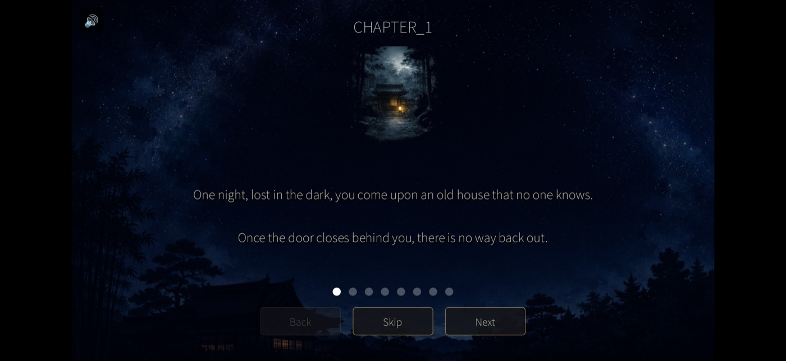
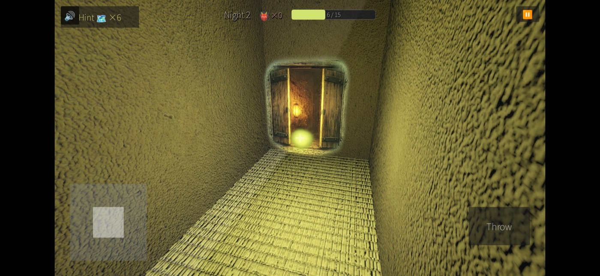
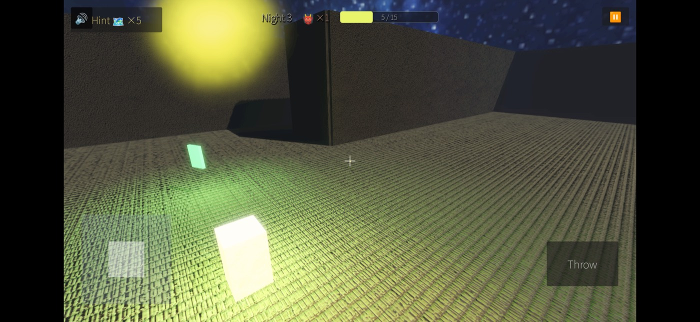
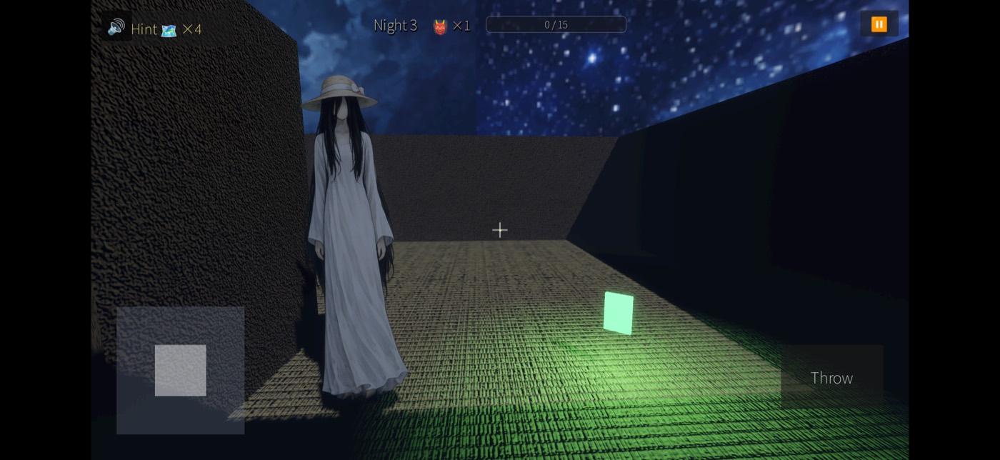
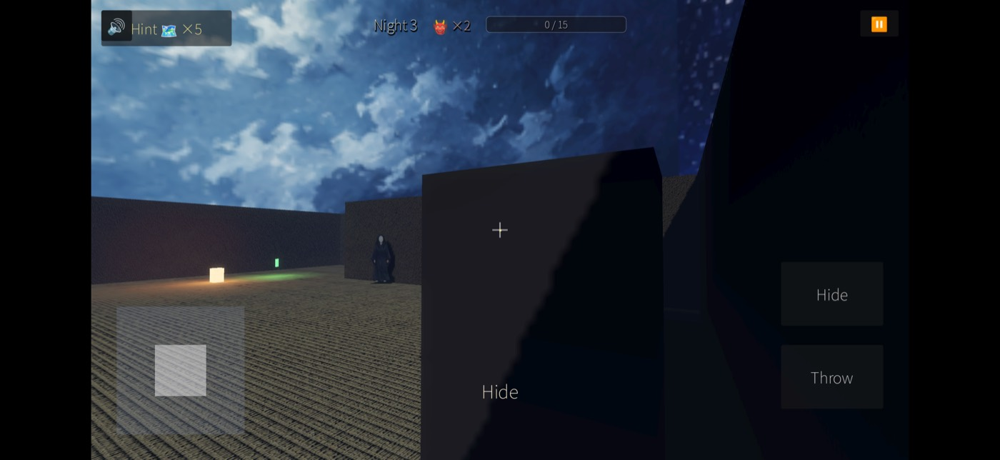

A quiet first-person Japanese horror walk-sim. One night, lost in the dark, you come upon an old house no one knows — and once the door closes behind you, there is no way back out.

Lost in the dark, you find the house
The World
🏮
The stage is a "lost house" (maioiga) — a sprawling estate that should not exist. Andon lantern light glows warm against the dark, fireflies drift through the halls, and something else wanders there with you. Atmospheric, quiet, and a little unsettling.

Andon lantern safe zones light the way
How to Play
🕯
Explore in first person with on-screen touch controls. Gather fireflies, reach the lantern-lit safe zones, and find your way out — without being caught.
Move with the left stick and look around by dragging.
Collect glowing fireflies and follow the green map fragments toward the exit.
Avoid the yokai roaming the halls — throw an item to distract it, or hide until it passes.

Gather drifting fireflies

Avoid the yokai in the halls

Hide or throw to slip past
Highlights
✨
Eerie first-person atmosphere across multiple nights